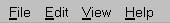
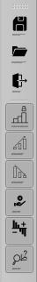
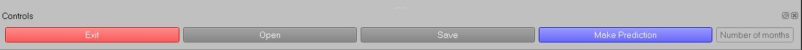
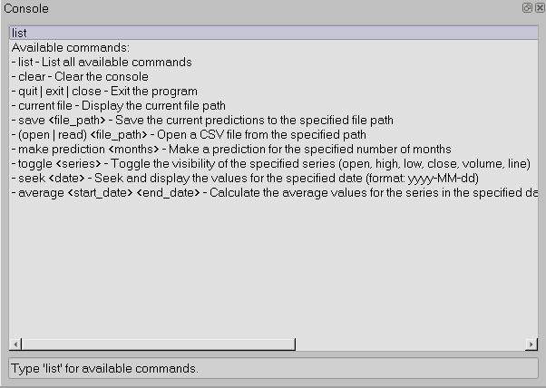
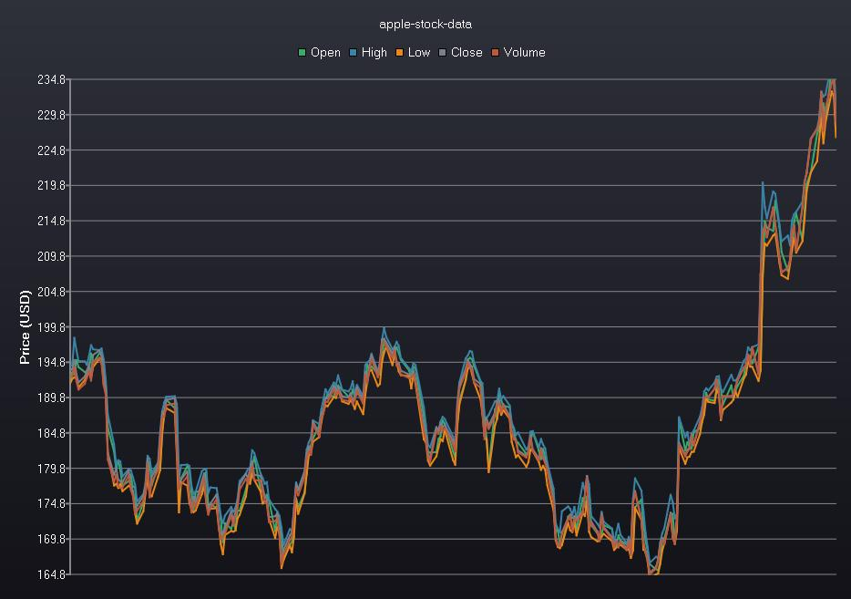
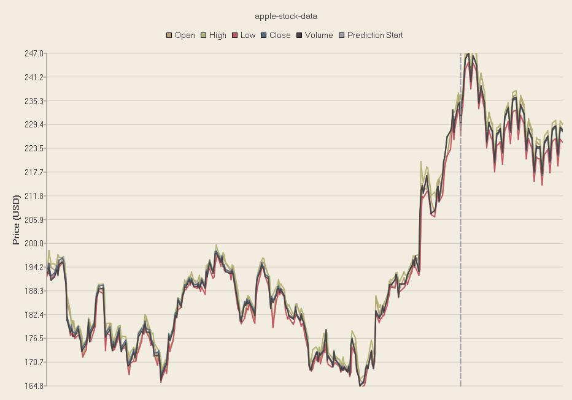
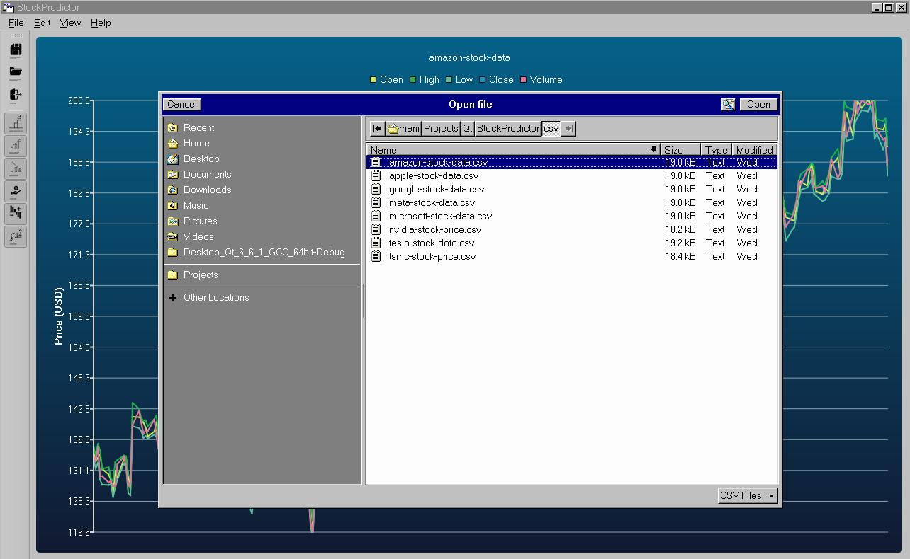
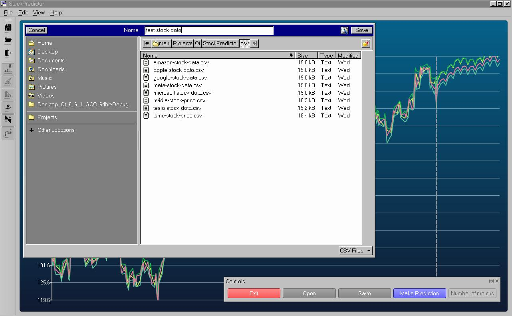
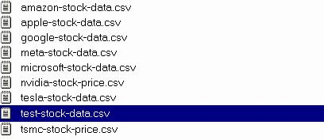

README
Table of Contents
Overview
The Stock Prediction Program is a tool that uses historical stock data to predict future trends, using the Facebook Prophet library to generate forecasts based on a user-provided CSV file containing stock prices. The program offers an arsenal of tools for the user to work with when analyzing stock data. This software has been tested to work on Ubuntu 22.04 LTS and Debian 12.
Installation
Install Dependencies
The Stock Predictor Program requires Qt 6.6, as well as, the pandas and prophet python packages.
Install the required python libraries using pip install:
pip install pandas prophet
Install Qt 6.6.X using the online installer here.
Build the program from source
Clone the Stock-Predictor-UI repository:
git clone https://github.com/ManuelAlbisu/Stock-Predictor-UI.git
Navigate to the root directory of the program:
cd /path/to/Stock-Predictor-UI
Build the program:
mkdir build && cd build cmake .. make
Run the program:
./StockPredictor
Build program through Qt Creator
Open Qt Creator and navigate to the Welcome tab. Select the Open Project button and navigate to the projects CMakeLists.txt file.
Open the project and select Build from the menubar, then select Build Project 'StockPredictor'.
Finally, select Build from the menubar once again and select Run.
Menubar

File
The File tab on the menu bar grants the user access to the Open, Save, and Exit actions.
- Open: Load a CSV file containing stock data.
- Save: Save the current predictions to a specified file.
- Exit: Exit the application.
Edit
Allows the user to change the current theme of the graph.
Available themes:
- Light: A light theme with bright colors, suitable for well-lit environments.
- Dark: A dark theme with muted colors, ideal for low-light conditions or reducing eye strain.
- Blue Cerulean: A theme with shades of blue, providing a calming visual effect.
- Brown Sand: A warm theme with earthy tones, giving a natural and rustic feel.
- Blue NCS: A theme with a different shade of blue, offering a cooler and more modern look.
- High Contrast: A theme with high contrast colors, making it easier to distinguish between different series and elements.
- Blue Icy: A theme with icy blue tones, providing a crisp and refreshing appearance.
- Qt: The default Qt theme, reflecting the native appearance of the Qt framework.
View
Toggle the visibility of certain UI elements.
Available options:
- Toggle the visibility of different stock series
- Open
- High
- Low
- Close
- Volume
- Toggle the visibility of the docks
- Control panel dock
- Console dock
- Toggle the prediction line.
Help
Opens this file!
Toolbar

Similar to the menu bar, the tool bar give the user quick access to the Open, Save, and Exit actions. It also gives the user an easy way of toggling the lines plotted on the graph.
Control Dock

The control dock gives the user an easily accessible way of opening files, saving graphs with predictions, and exiting the program. A button for making predictions is also available for the user to interact with.
Console

The console provides several methods of interacting with the data through commands.
Those commands include:
list: List all available commands.clear: Clear the console.quit|exit|close: Exit the program.current file: Display the current file path.save <file_path>: Save the current predictions to the specified file path.open <file_path>: Open a CSV file from the specified path.make prediction <months>: Make a prediction for the specified number of months (1-12).toggle <series>: Toggle the visibility of the specified series (open, high, low, close, volume, line).seek <date>: Seek and display the values for the specified date (format: yyyy-MM-dd).average <start_date> <end_date>: Calculate the average values for the series in the specified date range (format: yyyy-MM-dd).
Graph

The graph is the main visualization method the UI uses for presenting stock data to the user. The individual lines on the graph can be toggled on and off so that the user can view the trajectory of a certain category.
Making a prediction will automatically draw a line on screen to separate the original data from the newly generated data.
Predictions

The user can predict stock trends by typing in the number of months into the future they would like to predict then pressing the Make Prediction button on the control panel.
The console also allows the user to make predictions simply by typing “make prediction <months>”. A new graph with the predicted data appended to it will then be drawn on screen separated by a dotted line.
Load

Selecting the load button will cause a dialog box to appear prompting the user to select a CSV file to display on the graph.
Files can also be opened by typing “open <filepath>” in the console.
Save


Selecting the Save button will open a dialog box and prompts the user to select a directory to save the file in. The user can give the file and name and the file will be saved.
Only files which have had predictions performed on them can be saved. Files can also be saved using the console by typing “save <filepath>”.